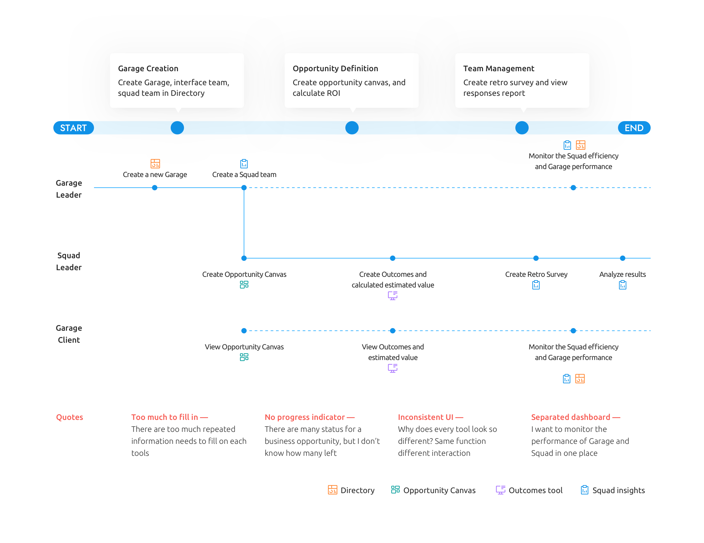
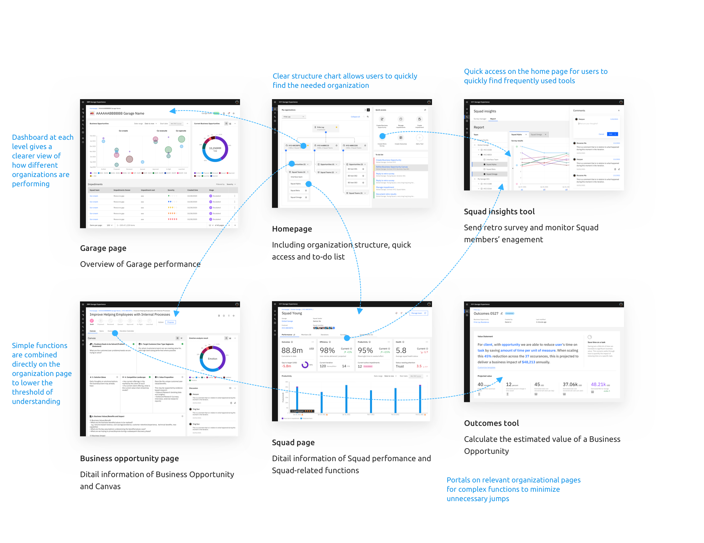

IBM Garage Experience
Everything in one place. Experience efficiency, speed and professional assistance.
My Role
Lead UX Designer
Core Team
Designer x 2, Developer x 6, Architect x 1, PM x 1
Duration
6 months
My Responsibilities
- User research
- Wire-framing
- Usability testing
- UI design
Tools
Mural, Sketch, Invision
Background
IBM Garage is a collection of practices woven together as a methodology to bring all of IBM together in helping a client realize business value at the fastest and most efficient rate possible.For the past years, IBM Garage has release a series of supporting tools, Directory, Squad insights, Outcomes tool, Opportunity canvas,… to assist in the running of Garage projects.
Challenge
Garage is an emerging way of collaboration and engagement with clients. We used to leverage individual tools to accomplish each activity seperately. Now that Garage methodology is becoming mature, more projects are working according to Garage workflow, and the supporting tools are being used more frequently than before. The old way of making users jump between various tools to complete a series of tasks is not suitable anymore.
Persona
Primary User
Amy needs to monitor the entire Garage operation; manage, execute, and document Garage's key activities.
Challenge:
Currently requires jumping between different tool platforms to complete a series of tasks, which is a cumbersome process and requires filling in a lot of repetitive information.
Secondary User
Freddie needs to keep up with Garage's progress and assist with Garage's key activities when necessary.
Challenge:
Garage has a complex organizational structure, and as a project member you may not know enough about the whole Garage project as a whole to help the team leader with certain tasks.
Key Stakeholder
Karen needs to see the performance of Garage project and the business value it brings.
Challenge:
Currently Garage operation and business value are provided entirely by IBM consultants, which is not credible enough to monitor Garage's operation and value in real time.
As-is Journey Map
Design Goal
A consistent visual language can convey Garage's branding, lower user learning costs, and reduce repetitive development of interactive components.

Each tool should be connected with a certain project phase, under a particular organization, so that Garage practitioners can be aware of what tools should they use, and who should be responsible for it.
Present key metrics of Garage's performance to users and stakeholders. And dashboards can be drilled down further to see the source of the data.
Initial Idea
Feedback From Small Projects
The initial design was based on the requirements of large project users. They are Garage's primary source of revenue. However, large projects currently account for 20% of clientele. There are lots of small Garage projects that still have simple structures and only need several tools to quickly finish certain tasks. A complex system could be hard to use for them.
"The Garage projects I've worked on are basically small projects that don't have such a standard organizational structure. I am both the Garage leader and Squad leader. It's unnecessary to attach every activity to a certain role. This system is great, but it doesn't work for me."
"In reality, it is possible to start my Garage project at any stage, so I may not use so many tools that strictly follows Garage standard workflow. Besides, I'm not sure which tool is most suitable for me at the current phase."
Basic Mode
On the basis of first ensuring that large project users requirements are satisfied, we added a “basic mode"- users of different project sizes can choose the model that suits them.
In the basic mode, users can select which phase of the project they are in and we will recommend the suitable tools and generate the corresponding simple mode home page. Users can also customize the homepage.
Final Design
Visual Guidelines
Based on Carbon design system, we combined the Garage branding and chose a more neutral cyan color to reflect the inclusive, professional and simple characteristics of the Experience platform.
Outcome
In October 2021, the first version of the Garage Experience platform was released, quickly gaining acceptance from a large number of users within IBM. Not only has usage increased to over 50% in Garage projects, but it has also been recommended to other projects as a model and reference.